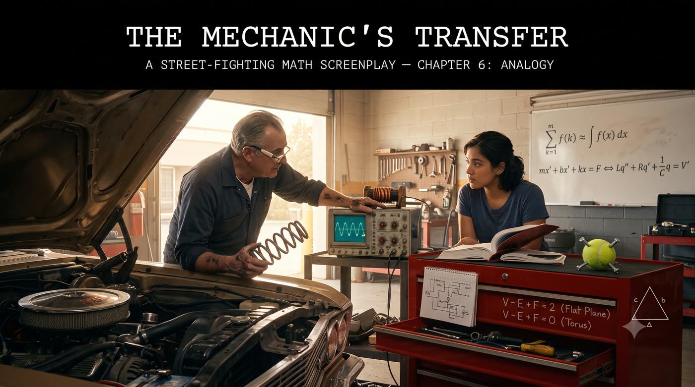

ANALOGY: Solve the problem you KNOW → transfer to
the problem you DON'T.
BOND ANGLE (2D → 3D):
2D: 3 points on circle → 360°/3 = 120°
3D: 4 points on sphere → arccos(-1/3) = 109.5°
Method transfers. Answer doesn't.
EULER'S FORMULA (sphere → torus):
Sphere: V - E + F = 2 (genus 0)
Torus: V - E + F = 0 (genus 1)
General: V - E + F = 2 - 2g
SUMS ↔ INTEGRALS:
Σ k² from 1..n ≈ ∫ x² dx from 0..n = n³/3
Exact: n³/3 + n²/2 + n/6
Leading term matches. Analogy nails it.
ELECTRICAL ↔ MECHANICAL (isomorphism):
mass m ↔ inductance L
damping b ↔ resistance R
spring k ↔ 1/C
m·x'' + b·x' + kx = F(t)
L·q'' + R·q' + q/C = V(t)
FADE IN: A cluttered but organized garage. Engine blocks on stands, diagnostic screens flickering. GUS (60s, permanent grease under his nails, bifocals held together with electrical tape) is bent over an open hood. His apprentice, NADIA (20s, engineering student, weekend job), is staring at a textbook propped on a toolbox. NADIA Gus, I've got a spatial geometry problem I can't crack. The bond angle in methane — the angle between hydrogen atoms around a central carbon. It's three-dimensional trigonometry and I can't visualize it. GUS (not looking up) What's the 2D version? NADIA What? GUS If you can't solve the 3D problem, solve the 2D problem first. Then figure out what changes when you add a dimension. NADIA That's... not what my textbook says to do. GUS (straightening up, wiping his hands) Your textbook attacks every problem head-on. I don't. I find a problem I already know how to solve — one that LOOKS like the hard problem — and I transfer the solution. That's analogy. The most powerful tool in the box.
GUS Methane. CH₄. One carbon in the center, four hydrogens around it, equally spaced. You want the angle between any two hydrogen-carbon bonds. That's a 3D problem — four points equally spaced on a sphere. NADIA Right. A regular tetrahedron. GUS Hard to visualize. So drop a dimension. What's the 2D analogue? NADIA (thinking) Three points equally spaced around a circle? An equilateral triangle? GUS Right. What's the angle between two "bonds" — from center to vertex — in that case? NADIA Three vertices, 360 degrees divided by 3... 120 degrees. GUS Good. Now — how did you get 120? You used the fact that three points divide a circle into three equal arcs. The 3D version: four points divide a sphere into four equal solid angles. Same logic, one dimension up. NADIA But the 3D angle isn't just 360/4 = 90 degrees... GUS No, because solid angles don't divide like flat angles. But the APPROACH transfers. In 2D, you used symmetry plus the geometry of a circle. In 3D, use symmetry plus the geometry of a sphere. He grabs a tennis ball and four screws, positions them equally. GUS (CONT'D) The angle is arccos(-1/3). About 109.5 degrees. And you find it using the same dot-product method you'd use in 2D — just with one more coordinate.
NADIA So the analogy is: flat geometry → spatial geometry. Same structures, one more dimension. GUS Exactly. And notice what transferred and what didn't. The METHOD transferred — using symmetry plus dot products. The ANSWER didn't — 120° doesn't become 109.5° by any simple formula. NADIA So analogy gives you the approach, not the final number. GUS It gives you a map. "This thing in the new problem corresponds to THAT thing in the old problem." Once you have the map, you can navigate the new territory using skills from the old territory. He points at the engine. GUS (CONT'D) When I see an unfamiliar engine, I don't panic. I look for analogues. The cooling system is like every other cooling system — pump, radiator, thermostat. The names might change, the layout might differ, but the FUNCTION maps to something I already know. NADIA You're saying mathematics works the same way? GUS Mathematics IS that. Every new problem is a disguised version of an old problem — if you can see the disguise. The art is finding the right analogy. The right old problem that maps onto the new one. NADIA How do you find it? GUS You collect problems. The more you've seen, the bigger your library of analogues. Every problem you solve is a tool for future problems.
Gus walks to a whiteboard mounted on the garage wall — covered in customer names and repair notes. He wipes a section clean. GUS Here's a topology problem. Take a sphere — like a basketball. Draw lines on it that divide the surface into regions. Some regions are triangles, some are quadrilaterals, whatever. How many regions? NADIA Depends on how many lines you draw... GUS Right. But there's a CONSTRAINT. A relationship between the number of regions, edges, and vertices. Do you know it for flat surfaces? NADIA Euler's formula! V - E + F = 2. Vertices minus edges plus faces equals two. GUS For a flat plane — or equivalently, a sphere. That formula comes from topology. Now here's the analogy question: what's the equivalent formula for a torus? A donut shape? NADIA I... don't know. Is it still 2? GUS No. For a torus it's V - E + F = 0. The number changes with the shape's topology. But the STRUCTURE of the formula — vertices minus edges plus faces equals a constant — that transfers perfectly. NADIA So the analogy is: sphere → torus. Same formula structure, different constant. GUS And the constant tells you something deep about the shape — its "genus." A sphere has genus 0. A torus has genus 1. The formula becomes V - E + F = 2 - 2g. The analogy reveals the pattern.
NADIA Okay, but how does that help me solve problems? Knowing that spheres and toruses have similar formulas? GUS Because if someone asks "how many regions does this wiring diagram create?" — and the diagram is drawn on a flat board — you use V - E + F = 2. You already know two of the three numbers. The third falls out for free. He draws a wiring diagram: 4 vertices (junction boxes) 6 edges (wires) F = ? V - E + F = 2 4 - 6 + F = 2 F = 4 regions GUS (CONT'D) Four distinct zones in the wiring layout. I know that without counting — just from the formula. NADIA And if the wiring wraps around a cylinder... GUS Different topology, different constant. But the same formula structure. The analogy tells me WHICH formula to reach for — even when the geometry changes. NADIA It's like... pattern matching across domains. GUS That's all mathematics IS. Pattern matching across domains. Analogy is just doing it consciously — deliberately transferring structure from solved problems to unsolved ones.
GUS Here's my favorite analogy. Sums and integrals. He writes: SUM: Σ f(k) [k = 1 to n] INTEGRAL: ∫ f(x) dx [x = a to b] GUS (CONT'D) A sum adds up discrete pieces. An integral adds up a continuous smear. They're analogues — the integral is the "continuous version" of the sum. NADIA Everyone knows that. GUS Everyone SAYS that. But do they USE it? If you know the integral of x² is x³/3... what's the sum of k² from 1 to n? NADIA I'd have to look up the formula... n(n+1)(2n+1)/6? GUS Or you could use the analogy. The integral of x² from 0 to n is n³/3. By analogy — replacing the smooth integral with the discrete sum — the sum of k² from 1 to n should be APPROXIMATELY n³/3. NADIA And is it? GUS The exact sum is n³/3 + n²/2 + n/6. The leading term — the big part — is n³/3. Exactly what the integral analogy predicts. NADIA So the integral gives you the dominant term of the sum? GUS Always. For any polynomial sum. The integral is the zeroth-order approximation. Then there are corrections — and THOSE are given by the Euler-Maclaurin formula. Which is itself built on... analogy.
GUS The Euler-Maclaurin formula says: the difference between a sum and its analogous integral is given by correction terms involving derivatives at the endpoints. He writes: Σ f(k) ≈ ∫ f(x)dx + (1/2)[f(a) + f(b)] + ... GUS (CONT'D) The first correction is the trapezoid rule — average the endpoints. The next corrections involve higher derivatives. Each one is smaller than the last. NADIA So it's like "taking out the big part" — the integral is the big part of the sum? GUS (pointing at her) NOW you see it. The tools connect. Analogy finds the approximate answer — the integral. Taking out the big part tells you the correction is small. Easy cases could check the result. Dimensions could verify the units. All six tools work together. NADIA They're not separate techniques. They're... a system. GUS A toolkit. Each tool does one thing well. But the real power comes from combining them. Analogy gives you the candidate. Easy cases test it. Dimensions check the structure. Lumping simplifies it. Taking out the big part refines it. Pictorial proofs confirm it. NADIA Six tools, used in combination. GUS That's street-fighting mathematics. Not one big hammer — a whole belt of precision instruments.
Gus walks over to a workbench where an old oscilloscope sits next to a set of suspension springs. GUS Here's the analogy I use every day. Electrical circuits and mechanical systems. He holds up a spring in one hand and points to the oscilloscope with the other. GUS (CONT'D) A spring-mass system: mass, spring constant, damper. Described by: m(d²x/dt²) + b(dx/dt) + kx = F(t) An electrical RLC circuit: inductor, resistor, capacitor. Described by: L(d²q/dt²) + R(dq/dt) + (1/C)q = V(t) NADIA They're the same equation. GUS EXACTLY the same. With a dictionary: mass m ↔ inductance L damping b ↔ resistance R spring k ↔ 1/capacitance force F ↔ voltage V displacement x ↔ charge q velocity dx/dt ↔ current I GUS (CONT'D) Anything I know about springs, I know about circuits. Anything I know about circuits, I know about springs. The analogy isn't just helpful — it's a COMPLETE ISOMORPHISM. Same math, different physical clothing. NADIA So if I solve one... GUS You've solved both. And every other system governed by the same equation. Pendulums. Acoustic resonators. Population dynamics. All the same math wearing different costumes.
NADIA So analogy is really about finding isomorphisms — maps between different domains that preserve structure. GUS That's the formal way to say it. The street way to say it is: if two problems have the same shape, they have the same solution. NADIA How do you know when two problems have the same shape? GUS Experience. But there are clues. If the equations look the same — same form, different variables — that's a structural analogy. If the limiting behavior is the same — same easy cases — that's a behavioral analogy. If a picture of one looks like a picture of the other — that's a geometric analogy. He leans against the workbench. GUS (CONT'D) The methane bond angle: geometric analogy (2D → 3D). Euler's formula on different surfaces: structural analogy (same formula, different constant). Sums and integrals: behavioral analogy (same limiting behavior as spacing → 0). Springs and circuits: complete isomorphism. NADIA Each type of analogy gives you different things. GUS Geometric analogy gives you intuition — a way to visualize the new problem. Structural analogy gives you the formula — a template to fill in. Behavioral analogy gives you the leading term — the big-picture answer. And isomorphism gives you everything — a complete solution transferred wholesale. NADIA So the stronger the analogy, the more you can transfer. GUS And the weaker the analogy, the more you have to check. But even a weak analogy — even just a hint of similarity — is better than starting from zero.
Late afternoon light slants through the garage bay doors. Nadia closes her textbook. Gus washes his hands at the utility sink. GUS (over his shoulder) You've got six tools now. Six ways to attack a problem without solving it head-on. He counts on his grease-stained fingers: GUS (CONT'D) One — Dimensions. Check the units. Guess the form. Eliminate the impossible. Two — Easy Cases. Test at the extremes. If it fails the easy test, it's wrong everywhere. Three — Lumping. Replace the complicated thing with the simple thing. Curves with rectangles. Equations with ratios. Four — Pictorial Proofs. Draw it. If you can see it, you can prove it. Five — Taking Out the Big Part. Handle the dominant term first. Correct later if needed. Six — Analogy. Find a problem you've already solved that looks like the one you haven't. Transfer the solution. NADIA (smiling) Street-fighting mathematics. GUS The art of educated guessing and opportunistic problem solving. You'll never have complete information. You'll never have infinite time. These tools let you move forward anyway — with courage instead of certainty. He dries his hands, tosses the rag over his shoulder. GUS (CONT'D) Bon voyage, kid. Go break some problems. Nadia walks out into the afternoon sun, textbook under her arm, seeing the world a little differently — as a web of analogies waiting to be noticed. FADE OUT.